Association between Patient Behaviors and Clinical Significance in the ED
Takatsu Yuki
Senda Atsushi
9/23/2025
1 Introduction
1.1 Background
- Emergency departments (ED) face increasing patient numbers and overcrowding.
- Traditional triage systems are based on chief complaints, medical history, and vital signs, but they cannot fully capture subtle patient behaviors.
- Few studies have examined prognosis prediction based on patient’s spontaneous behaviors in the ED, and one overlooked example is the ‘request to urinate.’
- We investigated how the probability of hospital admission changes according to the time from arrival at the ED to the patient’s request to urinate.
1.2 Methods
- From January 29 to July 31, we collected data on ambulance-transported patients to the ED, including sex, age, ED arrival time, time of request to urinate, presence of a urinary catheter, and outcomes (discharge, outpatient, admission to general ward/CCU/SCU/ICU1, transfer, or death).
- Patients with missing data, those who had a urinary catheter in place, and patients with caudiopulmonary arrest on arrival were excluded from the analysis.
- Hierarchical Bayesian modeling was performed with PyMC 5.25.1.
1.3 Patient Flow
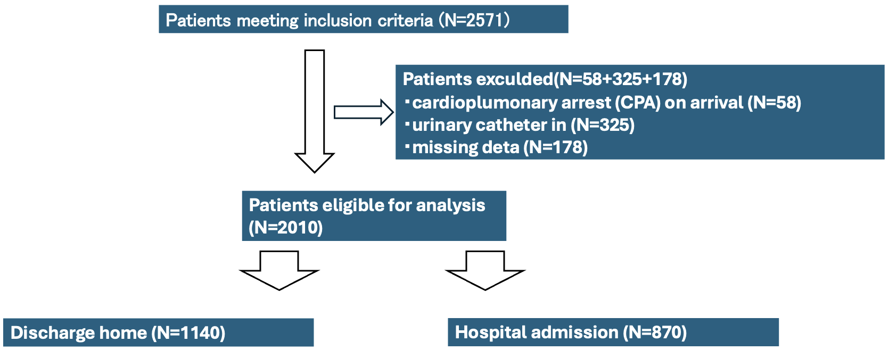1.4 Table 1
| Discharged Home (n=1140) |
Hospital Admission (n=870) |
|
|---|---|---|
| Age | 62 (35.8-80.0) | 77 (62.0-84.0) |
| Female | 525 (46.1%) | 389 (44.7%) |
| Time | 49 (23-88) | 89.5 (45-141) |
1.5 Table 2: Comorbidity（併発症）
| Discharged Home (n=1140) |
Hospital Admission (n=870) |
|
|---|---|---|
| None | 102 (40.8%) | 49 (26.3%) |
| Hypertention | 56 (22.4%) | 64 (34.4%) |
| Diabetes | 30 (12.0%) | 31 (16.7%) |
| Malignancy | 22 (8.8%) | 26 (14.0%) |
| Neuroligic Dis. | 22 (8.8%) | 22 (11.8%) |
| Cerebrovascular Dis. | 19 (7.6%) | 25 (13.4%) |
| Arriythmia | 25 (10.0%) | 19 (10.2%) |
| Dyslipidemia | 16 (6.4%) | 22 (11.8%) |
| Heart Failure | 14 (5.6%) | 17 (9.1%) |
| Chronic Lung Dis. | 11 (4.4%) | 13 (5.7%) |
| Renal Failure | 9 (3.6%) | 15 (8.1%) |
| Psychiatric Dis. | 14 (5.6%) | 5 (2.7%) |
| Liver Dis. | 9 (3.6%) | 5 (2.7%) |
| Valvular Dis. | 6 (2.4%) | 8 (4.3%) |
| Hematologic Dis. | 6 (2.4%) | 7 (3.8%) |
| Endocrine Dis. | 3 (1.2%) | 8 (4.3$) |
| Perioheral Vascular Dis. | 4 (1.6%) | 4 (2.2%) |
| Connective Tissue Dis. | 4 (1.6%) | 3 (1.6%) |
| Peptic Ulcer Dis. | 2 (0.8%) | 3 (1.6%) |
1.6 Table 3: Diagnosis（診断）
| Discharged Home (n=1140) |
Hospital Admission (n=870) |
|
|---|---|---|
| Orthopedics | 81 (32.4%) | 36 (19.3%) |
| Gastroenterology | 40 (16.0%) | 43 (23.1%) |
| Neurology | 44 (17.6%) | 16 (8.6%) |
| Infection | 13 (5.2%) | 34 (18.3%) |
| Cardiology | 21 (8.4%) | 20 (10.8%) |
| Urology | 21 (8.4%) | 7 (3.8%) |
| Cerebrovascular | 1 (9.6%) | 26 (14.0%) |
| Respiratory | 10 (13.2%) | 11 (5.9%) |
| Nephrology | 5 (9.6%) | 13 (7.0%) |
| Dermatology | 9 (9.6%) | 7 (3.8%) |
| Other | 5 (2.0%) | 11 (5.9%) |
2 Analysis
2.1 Variables
- Observations: i=1,\cdots,n.
- Binary outcome y_i=0\text{: Discharge Home / Outpatient},\; y_i=1\text{: \textcolor{#E95420}{\textbf{Admission}} / Death}.
- Elapsed Time from ED Arrival to Request to Void t_i^{\text{raw}}\ge0\qquad(\text{minutes}).
- Indicator m_i\in\{0,1\} m_i=0\text{: No Request}, \quad m_i=1\text{: Request Present}.
- Right-censoring was applied at 300 t_i:=\min(t_i^{\text{raw}},300).
2.2 Bayesian Hierarchical Logistic Regression
A Blog Entry on Bayesian Computation by an Applied Mathematician
$$
$$
y_i\sim\operatorname{Bernoulli}(p_i),\qquad i=1,\cdots,n, \operatorname{logit}(p_i)=(1-m_i)\left(\operatorname{logit}(\rho_0)+x_i^\top\beta\right)+m_i\left(\operatorname{logit}(\rho_1)+\Delta_i+x_i^\top\beta\right).
with \Delta_i (next slide) and the linear part given by: x_i^\top\beta=\beta_{\text{age}}a_i+\beta_{\text{age-mis}}a_i^{\text{mis}} +\beta_{\text{sex}}s_i+\beta_{\text{sex-mis}}s_i^{\text{mis}}.
- a_i: standardized age, a_i^{\text{mis}}: missing indicator for age
- s_i: sex (0: male, 1: female), s_i^{\text{mis}}: missing indicator for sex
2.3 Effective Log-likelihood \Delta_i
\Delta_i:=(1-c_i)\log\frac{f_1(t_i)}{f_0(t_i)}+c_i\log\left(\overline{\Phi}\left(\frac{C-\mu_1}{\sigma_1}\right)/\overline{\Phi}\left(\frac{C-\mu_0}{\sigma_0}\right)\right), where \overline{\Phi}=1-\Phi is the Gaussian survival function, and Gaussian densities f_0(t)=\phi(t|\mu_0,\sigma_0^2),\quad f_1(t)=\phi(t|\mu_1,\sigma_1^2), with \mu_1\ge\mu_0.
2.4 Prior Specification
\operatorname{logit}(\rho_0),\operatorname{logit}(\rho_1)\sim\operatorname{N}(0,1) \log\sigma_k\sim\operatorname{N}(\log\text{scale},1)\quad(k=0,1) \mu_0\sim\operatorname{TruncatedNormal}(t_{\text{mean}},2\cdot\text{scale},0,300) \mu_1=\min(\mu_0+\delta_\mu,300),\qquad\delta_\mu\sim\operatorname{HalfNormal}(\mathrm{scale}) \beta\overset{\text{i.i.d.}}{\sim}\operatorname{N}(0,1)
2.5 Inference and Diagnosis
No-U-Turn Sampler(NUTS) with 4chains:
- Baseline: 3,000 warm-up + 3,000 posterior draws
- Covariate: 1,500 warm-up + 1,500 posterior draws
- Settings: target_accept = 0.90, max_treedepth = 12
- JAX-Numpyro acceleration when available; otherwise PyMC, Convergence assessed via hat R, ESS, MCSE, and visual diagnosis (trace, rank, energy).
3 Evaluation
3.1 Evaluation Metrics
3.1.1 Population-level fit
For cumulative admissions,
Observed C_\text{obs}(t)/N vs posterior mean \operatorname{E}[\widehat{C}(t)]/N and 95% credible bands.
Time-integrated scalars: ABC, IAE, ISE, RMSE, KS, CvM, empirical coverage_95, avg_band_width
3.1.2 Individual-level metrics
At landmark times, T=60,120,180,240,300, we check
- AUC(t)
- Brier(t)
3.2 Study Population
- Ambulance-transported patients (Feb-Aug2025)
- Exclusions: CPA at arrival, existing urinary catheter, missing time infomation.
- Final sample size: n=2571
3.3 MCMC Convergence
Sampling diagnostics showed stable mixing without pathological divergences on representative patameters: ρ_0,\;ρ_1,\;μ_0,\;μ_1,\;σ_0,\;σ_1,\;β.
Trace, rank, and energy plots were visually acceptable in the combined diagnostic bundle.
\widehat{R}^2 was almost 1.0 for all parameters.
3.4 Rank Plot and Trace Plot
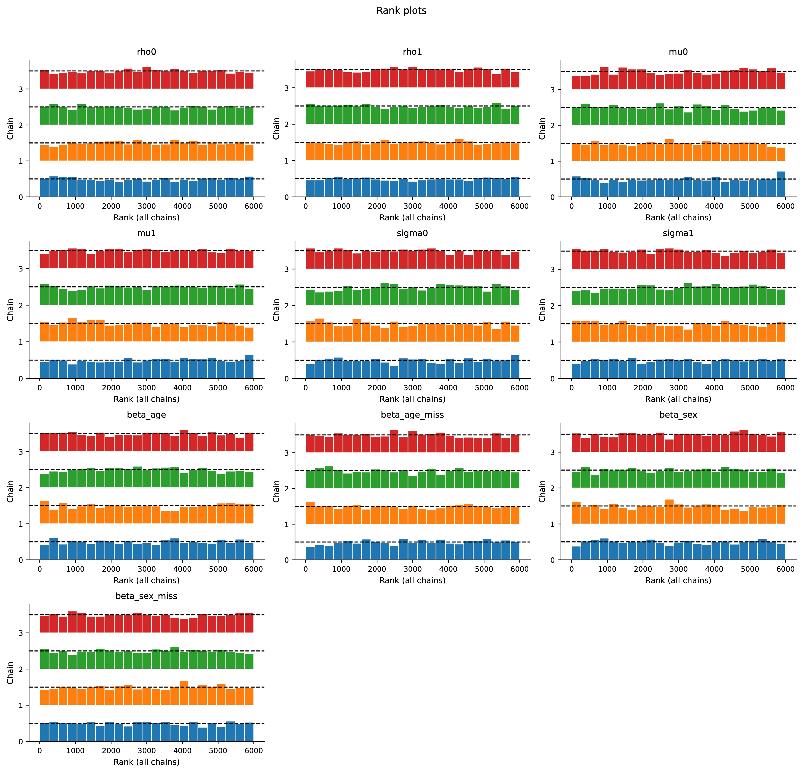
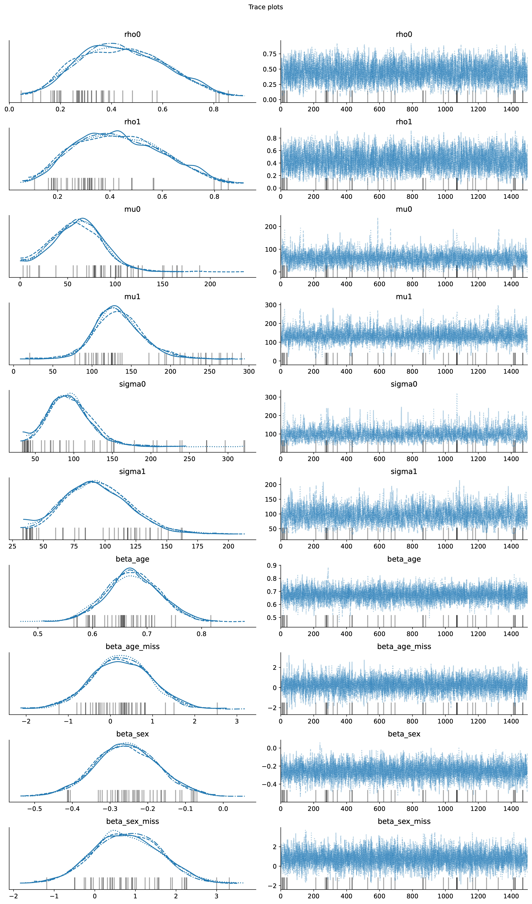
3.5 Energy Diagnosis
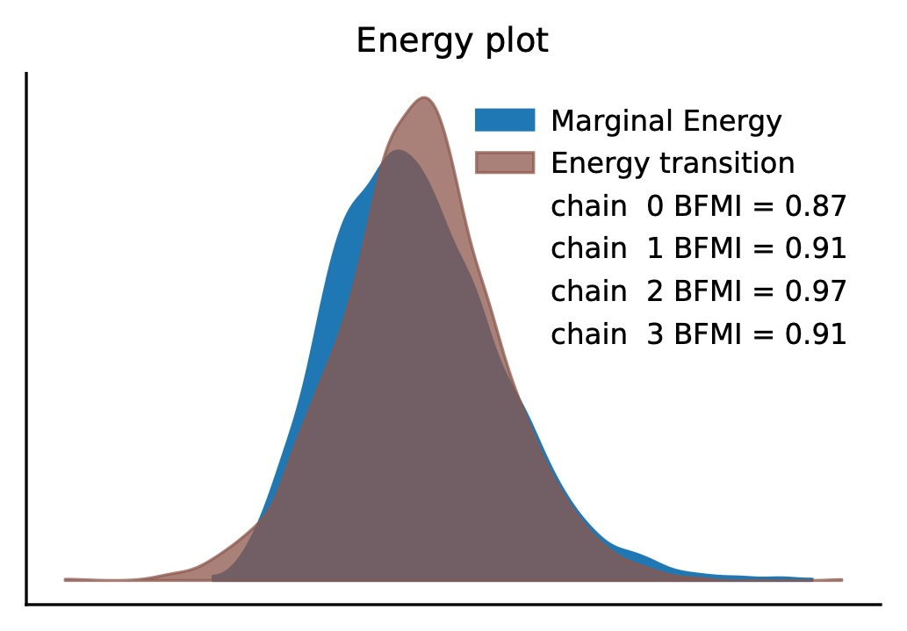Energy Plots
3.6 Population-level Fit (1/2)
- Observed cumulative admission curve (0-300 min) well reproduced
Baseline (time-only)
- Posterior mean closely followed empirical trajectory
- Narrow 95% credible band encompassed observed curve
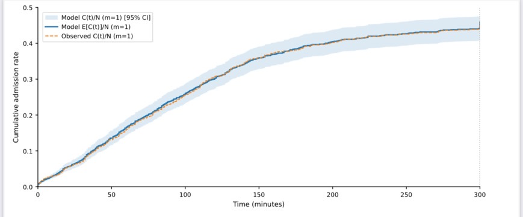
3.7 Population-level Fit (2/2)
Covariate (time + age + sex)
- Covariate model maintained fit while improving individual-level accuracy.
3.8 Calibration
- Recalibration improved alignment with 45° line at t=120:
\operatorname{logit}(\operatorname{P}[Y=1|\widehat{p}])=\gamma_1+\gamma_2\operatorname{logit}\widehat{p}.
- \operatorname{AUC}(t) remained stable; only 2~3% patients crossed threshold.
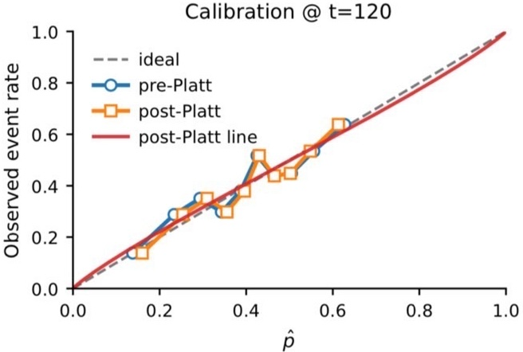
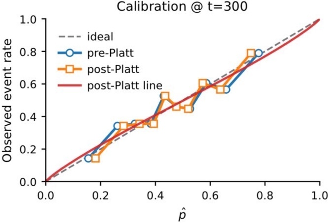
p_{\text{post-Platt}}=\operatorname{logistic}(\widehat{\gamma_1}+\widehat{\gamma_2}\operatorname{logit}\widehat{p}).
3.9 Decision Curve Analysis
- Covariate > Baseline for p_t\in[0.1, 0,6]
- Covariate shows small, directionally favorite net benefit vs Baseline at p_t\in[0.2,0.4], but CIs include zero. Evidence of advantage is modest.
\operatorname{NB}(p_t)=\frac{\mathrm{TP}}{N}-\frac{\mathrm{FP}}{N}\frac{p_t}{1-p_t}
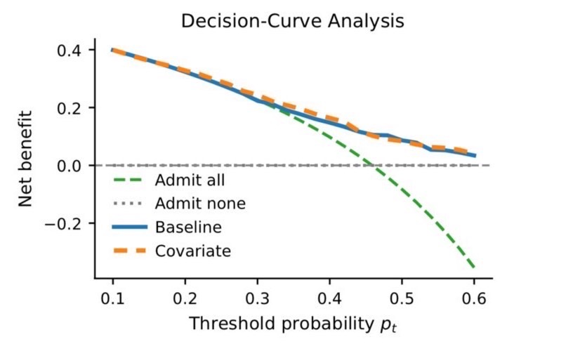
- TP: True Positive, FP: False Positive
- NB: Net Benefit
3.10 Robustness to TTU Measurement Error
Add jitter to t_i^{\text{raw}}: \widetilde{t}_i=t_i^{\text{raw}}+\epsilon_i,\qquad\epsilon\overset{\text{i.i.d.}}{\sim}\operatorname{Unif}(-\delta,\delta).
Changes in AUC and Brier score were negligible.
3.11 Individual-level Performance (1/2)
Baseline model (time-only)
- Discrimination: \operatorname{AUC}(t)\approx0.50 \to close to random prediction
- Overall accuracy: \operatorname{Brier}(t)\approx0.40 increased with time \to worsening accuracy \operatorname{Brier}(t)=\frac{1}{N}\sum_{i=1}^N(\widehat{p}_i-y_i)^2.

3.12 Individual-level Performance (2/2)
Covariate Model (time + age + sex)
Discrimination: \operatorname{AUC}(t)\approx0.70 improve
Overall accuracy: \operatorname{Brier}(t)\approx0.35 consistently lower than baseline model.
3.13 Posterior Predictive Checks
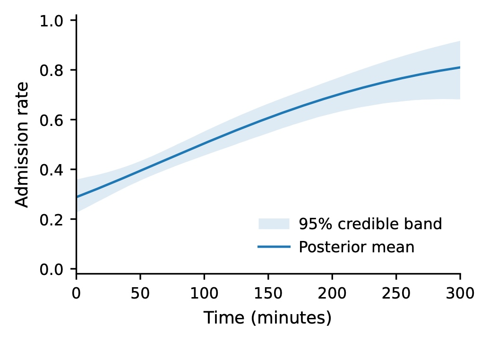
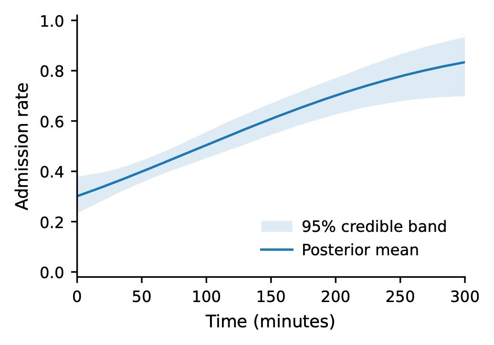
3.14 Posterior
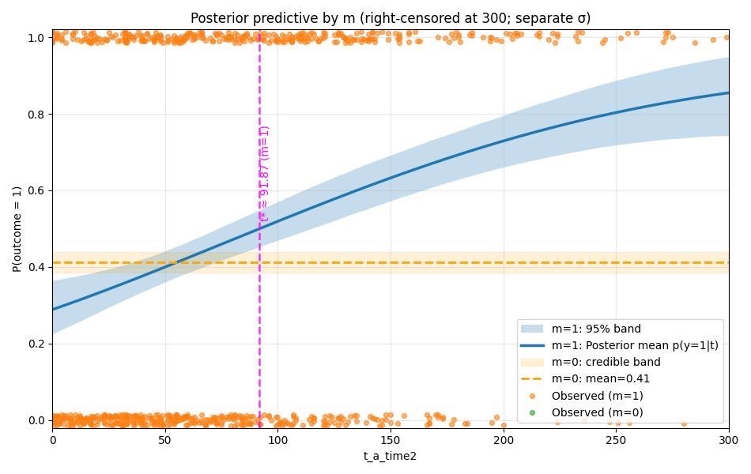Posterior Distribution of the Baseline Model
4 Summary
- Model predictions fit the observed data well.
- The hospitalization rate was below 50% among patients who requested urination within approximately 92 minutes after arrival at the ED.
- Hospitalizasion rate increased over time.
- Adding age and sex increased AUC to \approx0.68, lowered Brier score, and improved calibration.
Discussion and Feedback
- We developed an app. URL: accm.jp/urination
- Integrate patient behaviors and clinical data into the model to enable earlier prediction of hospitalization probability.
- We applied Bayesian regression in this study. What other approaches might be suitable for this problem?
- We did not record whether urinary catheter were inserted before RD arrival or the exact time of insertion in the ED. Catheter uses likely affecs the expression of voiding desire and should be considered in future research.